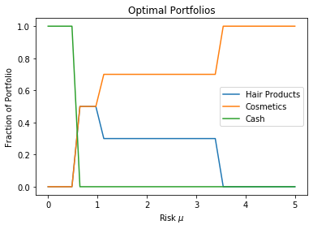

Financial Applications¶
Exercise 13.1¶
The parametric simplex method should be used when the number of investments to analyze is large.
[1]:
from pymprog import model
def find_optimal_portfolio(R, risk):
mu = max(0, risk)
#monthly returns per dollar for each of the n investments over T months
T, n = R.shape
#R = numpy.cumsum(M, axis=0) / numpy.arange(1, T + 1)[:, None]
#approximate expected return using historical data
#r = R[-1, :]
r = numpy.mean(R, axis=0)
lp = model('Portfolio Selection')
#lp.verbose(True)
x = lp.var('x', n, bounds=(0, None))
y = lp.var('y', T, bounds=(0, None))
lp.maximize(mu * sum(x_j * r_j for x_j, r_j in zip(x, r)) - sum(y) / T)
sum(x) == 1
for t in range(T):
-y[t] <= sum(x[j] * (R[t, j] - r[j]) for j in range(n)) <= y[t]
lp.solve()
#lp.sensitivity()
lp.end()
return numpy.asfarray([x[j].primal for j in range(n)]), lp.vobj()
import matplotlib.pyplot as plt
import numpy
M = numpy.asfarray([[1.000, 1.044, 1.068,1.016],
[1.003, 1.015, 1.051, 1.039],
[1.005, 1.024, 1.062, 0.994],
[1.007, 1.027, 0.980, 0.971],
[1.002, 1.040, 0.991, 1.009],
[1.001, 0.995, 0.969, 1.030]])
risks = numpy.concatenate((numpy.linspace(0, 3, 48),
numpy.linspace(3, 5, 6)[1:]))
X = []
for _ in risks:
_ = find_optimal_portfolio(M, _)
X.append(_[0])
plt.plot(risks, X)
plt.xlabel(r'Risk $\mu$')
plt.ylabel('Fraction of Portfolio')
plt.title(r'Optimal Portfolios')
plt.legend(['SHY', 'XLB', 'XLE', 'XLF'], loc='lower right')
plt.show()
<Figure size 640x480 with 1 Axes>
Exercise 13.2¶
Planet Claire’s efficient frontier is a plot of every portfolio in terms of risk–reward.
[2]:
M = numpy.asfarray([[1, 2, 1],
[2, 2, 1],
[2, 0.5, 1],
[0.5, 2, 1]])
risks = numpy.linspace(0, 5, 32)
X = []
rewards = []
for _ in risks:
_ = find_optimal_portfolio(M, _)
X.append(_[0])
rewards.append(_[1])
plt.plot(risks, X)
plt.xlabel(r'Risk $\mu$')
plt.ylabel('Fraction of Portfolio')
plt.title(r'Optimal Portfolios')
plt.legend(['Hair Products', 'Cosmetics', 'Cash'],
loc='center right')
plt.show()

Exercise 13.3¶
Converting (13.5) to standard form gives
\[\begin{split}\begin{aligned}
\mathcal{P} \quad -\text{maximize} \quad
-x_0 - s_0 x_1 - \sum_{j = 2}^n p_j x_j &\\
\text{subject to} \quad
-x_0 - s_1(i) x_1 - \sum_{j = 2}^n h_j(s_1(i)) x_j &\leq -g(s_1(i))
\quad i = 1, \ldots, m.
\end{aligned}\end{split}\]
Observe that the primal only has inequality constraints with free variables \(\left\{ x_j \right\}_{j = 0}^n\). This implies that the dual consists of restricted variables and equality constraints.
\[\begin{split}\begin{aligned}
\mathcal{D} \quad \text{minimize} \quad
\sum_i -g(s_1(i)) y_i &\\
\text{subject to} \quad
\sum_i (-1) y_i &= -1\\
\sum_i -s_1(i) y_i &= -s_0\\
\sum_i -h_j(s_1(i)) y_i &= -p_j\\
y_i &\geq 0 \quad i = 1, \ldots, m
\end{aligned}
\quad \equiv \quad
\begin{aligned}
\mathcal{D} \quad -\text{maximize} \quad
\sum_i g(s_1(i)) y_i &\\
\text{subject to} \quad
\sum_i y_i &= 1\\
\sum_i s_1(i) y_i &= s_0\\
\sum_i h_j(s_1(i)) y_i &= p_j\\
y_i &\geq 0 \quad i = 1, \ldots, m.
\end{aligned}\end{split}\]